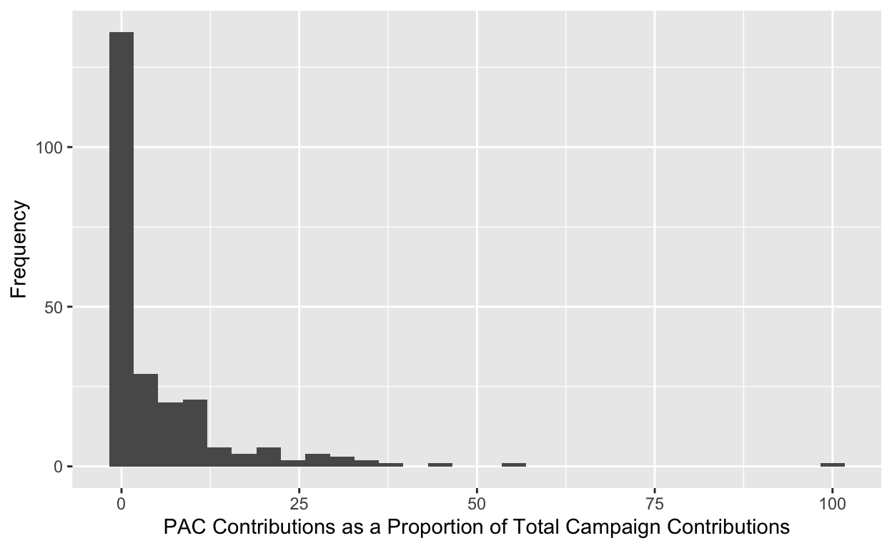

My final project
I am interested in exploring data related to campaign finance reports in school board races. I’d like to find patterns in outside spending in these local races.
What is the effect of political polarization on American school boards? I hypothesize that in recent years, there has been more attention on school boards due to the ways that national issues have intersected with this local institution. While school boards are supposed to address issues that are locally relevant, they also at times have to address issues that are more nationally focused, such as public health measures during the COVID-19 pandemic, critical race theory, LGBTQ+ issues, etc. Since school boards are having to take a position on these issues and implement policies over them, they have increased on visibility and as a result become the target of national groups. This can come in many forms, from the mobilization of people to recruiting candidates to run in competitive school board races to pouring money into school board races. In order to explore this topic, I will analyze campaign finance data from a number of school board races over time and focus on campaign contributions from political action committees as well as national donors (which is my explanatory variable). My outcome variable is the result of these races. Patterns of increased spending in school board races that lead to outcomes that align with these donor networks will indicate that political polarization is seeping into school board races in a tangible way.
campaign_finance <- campaign_finance |>
mutate(pac_prop = (PAC.Contributions/Total.Raised) * 100)campaign_finance First.Name Last.Name State County District.Region Year
1 Tina Certain FL Alachua District 1 2022
2 Daniel Fisher FL Alachua District 1 2022
3 Diyonne McGraw FL Alachua District 2 2022
4 Mildred Russell FL Alachua District 2 2022
5 Ray Holt FL Alachua District 3 2022
6 Sarah Rockwell FL Alachua District 3 2022
7 Kay Abbitt FL Alachua District 5 2022
8 Prescott Cowles FL Alachua District 5 2022
9 Wendy Noon FL Alachua District 5 2022
10 Khanh-Lien Banko FL Alachua District 2 2020
11 Diyonne McGraw FL Alachua District 2 2020
12 Sande Calkins FL Alachua District 4 2020
13 Leanetta McNealy FL Alachua District 4 2020
14 Tina Certain FL Alachua District 1 2018
15 April Griffin FL Alachua District 1 2018
16 Maxine Latimer FL Alachua District 3 2018
17 Judy DeJesus McNeil FL Alachua District 3 2018
18 Gunner Paulson FL Alachua District 3 2018
19 April Barefoot Tisher FL Alachua District 3 2018
20 Rob Hyatt FL Alachua District 5 2018
21 Paul Wolfe FL Alachua District 5 2018
22 Juliun Kinsey FL Alachua District 2 2016
23 Eileen Roy FL Alachua District 2 2016
24 Danny Zwilling FL Alachua District 2 2016
25 Leanetta McNealy FL Alachua District 4 2016
26 April Griffin FL Alachua District 1 2014
27 Gunner Paulson FL Alachua District 3 2014
28 Philoron Wright FL Alachua District 3 2014
29 Rob Hyatt FL Alachua District 5 2014
30 Jancie Vinson FL Alachua District 5 2014
31 Eileen Roy FL Alachua District 2 2012
32 Leanetta McNealy FL Alachua District 4 2012
33 Barbara Sharpe FL Alachua District 4 2012
34 Jodi Wood FL Alachua District 4 2012
35 Frances Gordon FL Bay District 2 2022
36 Ann Leonard FL Bay District 2 2022
37 Brenda Ruthven FL Bay District 2 2022
38 Christopher Moore FL Bay District 3 2022
39 Steve Moss FL Bay District 5 2022
40 Jerry Register FL Bay District 1 2020
41 Mark Strickland FL Bay District 1 2020
42 Frances Gordon FL Bay District 2 2020
43 Brenda Ruthven FL Bay District 2 2020
44 Winston Chester FL Bay District 4 2020
45 Tom Hedges FL Bay District 4 2020
46 Ginger Littleton FL Bay District 2 2018
47 Pamm Chapman FL Bay District 3 2018
48 Joe Walker FL Bay District 3 2018
49 David Haight FL Bay District 5 2018
50 Steve Moss FL Bay District 5 2018
51 Joan Campbell FL Bay District 1 2016
52 Jerry Register FL Bay District 1 2016
53 Ryan Neves FL Bay District 4 2016
54 Ginger Littleton FL Bay District 2 2014
55 Joe Walker FL Bay District 3 2014
56 Steve Moss FL Bay District 5 2014
57 George Hines Jr. FL Bay District 1 2012
58 Jerry Register FL Bay District 1 2012
59 Rickey Rivers FL Bay District 1 2012
60 Don Gray FL Bay District 4 2012
61 Ryan Neves FL Bay District 4 2012
62 Sheila Cummings FL Bradford District 1 2022
63 Gayle Nicula FL Bradford District 2 2022
64 Lynn Melvin FL Bradford District 5 2022
65 Erica Reddish FL Bradford District 5 2022
66 Cheryl Canova FL Bradford District 3 2020
67 Vivian Chappell FL Bradford District 4 2020
68 Candace Osteen FL Bradford District 4 2020
69 Sheila Cummings FL Bradford District 1 2018
70 Gayle Nicula FL Bradford District 2 2018
71 Jeremy Pilcher FL Bradford District 2 2018
72 Erica Reddish FL Bradford District 5 2018
73 Bobby Carter FL Bradford District 2 2016
74 Jim Peronto FL Bradford District 2 2016
75 Charnelle Whittemore FL Bradford District 2 2016
76 Verle Best FL Bradford District 3 2016
77 Cheryl Canova FL Bradford District 3 2016
78 Randy Jones FL Bradford District 3 2016
79 Vivian Chappell FL Bradford District 4 2016
80 Elbert Hersey FL Bradford District 4 2016
81 Sheila Cummings FL Bradford District 1 2014
82 Archie Kittles Jr. FL Bradford District 1 2014
83 Stacey Creighton FL Bradford District 2 2014
84 Erica Reddish FL Bradford District 5 2014
85 William Rehberg FL Bradford District 5 2014
86 Randy Starling FL Bradford District 5 2014
87 Roger Crews FL Bradford District 3 2012
88 Randy Jones FL Bradford District 3 2012
89 Braxton Britt Jr. FL Bradford District 4 2012
90 Rodney Carter FL Bradford District 4 2012
91 Mitchell Gunter FL Bradford District 4 2012
92 Elbert Hersey FL Bradford District 4 2012
93 Ed Wall FL Bradford District 4 2012
94 Misty Belford FL Brevard District 1 2022
95 Roy Gainer Jr. FL Brevard District 1 2022
96 William Shearer FL Brevard District 1 2022
97 Megan Wright FL Brevard District 1 2022
98 Erin Dunne FL Brevard District 2 2022
99 Courtney Lewis FL Brevard District 2 2022
100 Shawn Overdorf FL Brevard District 2 2022
101 Gene Trent FL Brevard District 2 2022
102 Katye Campbell FL Brevard District 5 2022
103 Kim Hough FL Brevard District 5 2022
104 Tina Descovich FL Brevard District 3 2020
105 Jennifer Jenkins FL Brevard District 3 2020
106 Matt Susin FL Brevard District 4 2020
107 David Worrells FL Brevard District 4 2020
108 Misty Belford FL Brevard District 1 2018
109 David Meader FL Brevard District 1 2018
110 Shana Moore FL Brevard District 1 2018
111 Cheryl McDougall FL Brevard District 2 2018
112 Charles Parker FL Brevard District 2 2018
113 Frank Sullivan FL Brevard District 2 2018
114 Michelle Treffinger FL Brevard District 2 2018
115 Katye Campbell FL Brevard District 5 2018
116 Kelly Damerow FL Brevard District 5 2018
117 Dean Paterakis FL Brevard District 5 2018
118 Daniel Wall-DeSousa FL Brevard District 5 2018
119 Andy Ziegler FL Brevard District 5 2018
120 Darcey Addo FL Brevard District 3 2016
121 Rich Charbonneau FL Brevard District 3 2016
122 Richard Charbonneau FL Brevard District 3 2016
123 Tina Descovich FL Brevard District 3 2016
124 William Finch FL Brevard District 3 2016
125 Dana DeSantis FL Brevard District 4 2016
126 Karen Henderson FL Brevard District 4 2016
127 Dean Paterakis FL Brevard District 4 2016
128 Matt Susin FL Brevard District 4 2016
129 Paul Chinaris FL Brevard District 1 2014
130 Misty Haggard-Belford FL Brevard District 1 2014
131 Shana Lynn Moore FL Brevard District 1 2014
132 John Craig FL Brevard District 2 2014
133 Robert Mentillo FL Brevard District 2 2014
134 R. Eric Reding FL Brevard District 2 2014
135 Keith Yarbrough FL Brevard District 2 2014
136 Denise Coyle FL Brevard District 5 2014
137 Dale Davis FL Brevard District 5 2014
138 Dean Paterakis FL Brevard District 5 2014
139 Andy Ziegler FL Brevard District 5 2014
140 Amy Kneessy FL Brevard District 3 2012
141 Dean Paterakis FL Brevard District 3 2012
142 Karen Henderson FL Brevard District 4 2012
143 Keri Lewis FL Brevard District 4 2012
144 Josetta Destin-Washington FL Broward District 1 2022
145 Marie Martin FL Broward District 1 2022
146 Veronica Newmeyer FL Broward District 1 2022
147 Rodney Velez FL Broward District 1 2022
148 Paul Wiggins FL Broward District 1 2022
149 Gustavo Alban FL Broward District 4 2022
150 Lori Alhadeff FL Broward District 4 2022
151 Kimberly Coward FL Broward District 4 2022
152 Antonio Burgess FL Broward District 5 2022
153 Ruth Carter-Lynch FL Broward District 5 2022
154 Clifford Coach Sr. FL Broward District 5 2022
155 Jeff Holness FL Broward District 5 2022
156 Gloria Lewis FL Broward District 5 2022
157 Nathalie Lynch-Walsh FL Broward District 5 2022
158 Jimmy Witherspoon FL Broward District 5 2022
159 John Canter FL Broward District 6 2022
160 Brenda Fam FL Broward District 6 2022
161 Steven Julian FL Broward District 6 2022
162 Merick Lewin FL Broward District 6 2022
163 John Moreno-Escobar FL Broward District 6 2022
164 Merceydes Morassi FL Broward District 7 2022
165 Nora Rupert FL Broward District 7 2022
166 Raymond Adderly III FL Broward District 8 2022
167 Mourice Hylton FL Broward District 8 2022
168 Donna Korn FL Broward District 8 2022
169 John Moreno-Escobar FL Broward District 8 2022
170 Allen Zemen FL Broward District 8 2022
171 Patricia Good FL Broward District 2 2020
172 Heather Brinkworth FL Broward District 3 2020
173 Sarah Leonardi FL Broward District 3 2020
174 Jonathon May FL Broward District 3 2020
175 Rosalind Osgood FL Broward District 5 2020
176 Debra Peterson FL Broward District 5 2020
177 Syretta Simon FL Broward District 5 2020
178 Jimmy Witherspoon FL Broward District 5 2020
179 Stephen Barrow FL Broward District 9 2020
180 Narnike Grant FL Broward District 9 2020
181 Ryann Greenberg FL Broward District 9 2020
182 Debra Hixon FL Broward District 9 2020
183 Jeff Holness FL Broward District 9 2020
184 Laurie Kandel FL Broward District 9 2020
185 Elijah Manley FL Broward District 9 2020
186 Anthony Robbins FL Broward District 9 2020
187 Timothy Sternberg FL Broward District 9 2020
188 Joyce Williams-Bryan FL Broward District 9 2020
189 Jimmy Witherspoon FL Broward District 9 2020
190 Jeffrey Freeman FL Broward District 1 2018
191 Natalia Garceau FL Broward District 1 2018
192 Ann Murray FL Broward District 1 2018
193 Veronia Newmeyer FL Broward District 1 2018
194 Jim Silvernale FL Broward District 1 2018
195 Nathalie Adams FL Broward District 4 2018
196 Lori Alhadeff FL Broward District 4 2018
197 Tennile Decoste FL Broward District 4 2018
198 Michael Kottler FL Broward District 4 2018
199 Laurie Levinson FL Broward District 6 2018
200 Richard Mendelson FL Broward District 6 2018
201 Mary Ann Royce FL Broward District 6 2018
202 Mike Olbel FL Broward District 7 2018
203 Nora Rupert FL Broward District 7 2018
204 Hubert St. Clair FL Broward District 7 2018
205 Donna Korn FL Broward District 8 2018
206 Elijah Manley FL Broward District 8 2018
207 Ryan Petty FL Broward District 8 2018
208 Patricia Good FL Broward District 2 2016
209 Andrew Ramjit FL Broward District 2 2016
210 Rose Walker-Williams FL Broward District 2 2016
211 Heather Brinkworth FL Broward District 3 2016
212 Nathalie Lynch-Walsh FL Broward District 5 2016
213 Rosalind Osgood FL Broward District 5 2016
214 Robin Bartleman FL Broward District 9 2016
215 Michelle Davis FL Broward District 9 2016
216 Sharnell Jackson FL Broward District 9 2016
217 Predrag Jovanov FL Broward District 9 2016
218 Felicia Brunson FL Broward District 1 2014
219 Theresa Moore FL Broward District 1 2014
220 Ann Murray FL Broward District 1 2014
221 Heather Brinkworth FL Broward District 3 2014
222 Sam Budyszewick FL Broward District 3 2014
223 Nick Sakhnovsky FL Broward District 3 2014
224 Abby Freedman FL Broward District 4 2014
225 Bob Mayersohn FL Broward District 4 2014
226 Laurie Levinson FL Broward District 6 2014
227 Lisa Spince FL Broward District 6 2014
228 Hubert St. Clair FL Broward District 7 2014
229 Nora Rupert FL Broward District 7 2014
230 Donna Korn FL Broward District 8 2014
231 Patricia Good FL Broward District 2 2012
232 Rebecca Blackwood FL Broward District 3 2012
233 Katherine Leach FL Broward District 3 2012
234 Michael Levinson FL Broward District 3 2012
235 Abby Freedman FL Broward District 4 2012
236 Louis Kushner FL Broward District 4 2012
237 Andrew Ladanowski FL Broward District 4 2012
238 Jaemi Levine FL Broward District 4 2012
239 Robert Mayersohn FL Broward District 4 2012
240 Rochelle Solomon FL Broward District 4 2012
241 Nick Steffens FL Broward District 4 2012
242 Torey Alston FL Broward District 5 2012
243 Roy Montgomery Jr. FL Broward District 5 2012
244 Ruth Lynch FL Broward District 5 2012
245 Grover Monroe FL Broward District 5 2012
246 Rosalind Osgood FL Broward District 5 2012
247 Christopher Hugley Sr. FL Broward District 5 2012
248 Donna Korn FL Broward District 8 2012
249 Andrew Luciani FL Broward District 8 2012
250 Franklin Sands FL Broward District 8 2012
251 William Barkins FL Broward District 9 2012
252 Robin Bartleman FL Broward District 9 2012
253 William Davison Jr. FL Broward District 9 2012
254 Barbara Wilson FL Broward District 9 2012
Total.Raised PAC.Contributions Elected pac_prop
1 41290 4750 1 11.5039961
2 20884 0 0 0.0000000
3 29130 2500 1 8.5822176
4 40511 13250 0 32.7071660
5 42726 5000 0 11.7024762
6 61634 4250 1 6.8955447
7 14131 0 1 0.0000000
8 25513 2750 0 10.7788186
9 0 0 0 NaN
10 71018 1750 0 2.4641640
11 177381 200 1 0.1127516
12 13784 1750 0 12.6958793
13 22849 200 1 0.8753118
14 28964 1550 1 5.3514708
15 18144 750 0 4.1335979
16 50 0 0 0.0000000
17 1815 0 0 0.0000000
18 39537 7200 1 18.2107899
19 10115 500 0 4.9431537
20 11805 850 1 7.2003388
21 2862 0 0 0.0000000
22 13987 1000 0 7.1494960
23 18215 2000 1 10.9799616
24 0 0 0 NaN
25 1402 0 1 0.0000000
26 7133 0 1 0.0000000
27 26300 5050 1 19.2015209
28 22511 0 0 0.0000000
29 16413 2625 1 15.9934199
30 12676 250 0 1.9722310
31 250 0 1 0.0000000
32 35347 9675 1 27.3714884
33 11034 0 0 0.0000000
34 9415 0 0 0.0000000
35 8230 0 0 0.0000000
36 41910 500 1 1.1930327
37 0 0 0 NaN
38 5850 0 1 0.0000000
39 1580 0 1 0.0000000
40 24545 1000 1 4.0741495
41 2330 0 0 0.0000000
42 2000 0 0 0.0000000
43 31500 0 1 0.0000000
44 24680 1000 1 4.0518639
45 2550 0 0 0.0000000
46 1600 0 1 0.0000000
47 54655 0 1 0.0000000
48 20725 0 0 0.0000000
49 5298 0 0 0.0000000
50 17150 0 1 0.0000000
51 1000 0 0 0.0000000
52 8045 0 1 0.0000000
53 1379 0 1 0.0000000
54 1500 0 1 0.0000000
55 1500 0 1 0.0000000
56 1862 0 1 0.0000000
57 12156 500 0 4.1131951
58 16771 0 1 0.0000000
59 2462 0 0 0.0000000
60 0 0 0 NaN
61 1622 0 1 0.0000000
62 0 0 1 NaN
63 550 0 1 0.0000000
64 6870 0 1 0.0000000
65 2000 0 0 0.0000000
66 500 0 1 0.0000000
67 100 0 0 0.0000000
68 5500 0 1 0.0000000
69 48 0 1 0.0000000
70 5800 0 1 0.0000000
71 2844 1000 0 35.1617440
72 200 0 1 0.0000000
73 1475 0 0 0.0000000
74 3440 300 0 8.7209302
75 4050 0 1 0.0000000
76 1250 0 0 0.0000000
77 4803 0 1 0.0000000
78 50 0 0 0.0000000
79 450 0 1 0.0000000
80 2000 0 0 0.0000000
81 80 0 NA 0.0000000
82 639 0 NA 0.0000000
83 100 0 NA 0.0000000
84 3094 0 NA 0.0000000
85 1110 0 NA 0.0000000
86 4694 0 NA 0.0000000
87 65 0 0 0.0000000
88 351 0 1 0.0000000
89 325 0 0 0.0000000
90 630 0 0 0.0000000
91 1170 0 0 0.0000000
92 4800 0 NA 0.0000000
93 1752 0 NA 0.0000000
94 49005 2830 0 5.7749209
95 0 0 0 NaN
96 1895 0 0 0.0000000
97 43990 4750 1 10.7979086
98 55743 11157 0 20.0150692
99 45509 0 0 0.0000000
100 12030 0 0 0.0000000
101 40507 3700 1 9.1342237
102 17962 2550 1 14.1966373
103 13750 1000 0 7.2727273
104 26981 3050 0 11.3042511
105 26710 2250 1 8.4238113
106 39978 11800 1 29.5162339
107 2000 0 0 0.0000000
108 18709 2250 1 12.0262975
109 28902 1750 0 6.0549443
110 190 0 0 0.0000000
111 4722 2650 1 56.1202880
112 16142 1500 0 9.2925288
113 16175 500 0 3.0911901
114 2300 0 0 0.0000000
115 25974 0 1 0.0000000
116 21183 1850 0 8.7334183
117 15000 0 0 0.0000000
118 1285 0 0 0.0000000
119 30425 3350 0 11.0106820
120 10314 0 0 0.0000000
121 18073 0 0 0.0000000
122 0 0 0 NaN
123 40429 8750 1 21.6428801
124 14065 200 0 1.4219694
125 32690 1000 0 3.0590395
126 5000 1000 0 20.0000000
127 2370 0 0 0.0000000
128 46259 12200 1 26.3732463
129 18469 500 0 2.7072392
130 11906 4000 1 33.5965060
131 50 0 0 0.0000000
132 36766 4750 1 12.9195452
133 4655 0 0 0.0000000
134 100 0 0 0.0000000
135 10801 0 0 0.0000000
136 11841 0 0 0.0000000
137 4255 0 0 0.0000000
138 3681 0 0 0.0000000
139 45911 6250 1 13.6132953
140 7800 2250 1 28.8461538
141 6496 0 0 0.0000000
142 3420 1500 1 43.8596491
143 4690 0 0 0.0000000
144 0 0 0 NaN
145 23796 1000 0 4.2023870
146 585 0 0 0.0000000
147 39008 2000 1 5.1271534
148 20941 500 0 2.3876606
149 0 0 0 NaN
150 78907 5600 1 7.0969622
151 39400 250 0 0.6345178
152 18225 100 0 0.5486968
153 59888 1500 0 2.5046754
154 1871 0 0 0.0000000
155 44451 7000 1 15.7476772
156 8000 0 0 0.0000000
157 6650 2000 0 30.0751880
158 4550 0 0 0.0000000
159 2265 0 0 0.0000000
160 33604 8185 1 24.3572194
161 111318 6125 0 5.5022548
162 15831 0 0 0.0000000
163 7662 0 0 0.0000000
164 14262 1830 0 12.8313000
165 39925 4750 1 11.8973075
166 21711 144 0 0.6632583
167 3055 0 0 0.0000000
168 79360 5500 0 6.9304435
169 1375 0 0 0.0000000
170 290570 1500 1 0.5162267
171 26800 500 1 1.8656716
172 65678 1250 0 1.9032248
173 66791 4750 1 7.1117366
174 4 0 0 0.0000000
175 25997 500 0 1.9232988
176 0 0 0 NaN
177 0 0 0 NaN
178 0 0 0 NaN
179 675 0 0 0.0000000
180 78454 0 0 0.0000000
181 3350 0 0 0.0000000
182 136286 15800 1 11.5932671
183 91115 1250 0 1.3718927
184 5165 0 0 0.0000000
185 5000 0 0 0.0000000
186 35000 0 0 0.0000000
187 0 0 0 NaN
188 6683 20 0 0.2992668
189 14160 0 0 0.0000000
190 148 0 NA 0.0000000
191 1956 0 NA 0.0000000
192 48850 2000 NA 4.0941658
193 4130 0 NA 0.0000000
194 58569 21550 NA 36.7942085
195 0 0 NA NaN
196 122675 5721 NA 4.6635419
197 9525 500 NA 5.2493438
198 6800 0 NA 0.0000000
199 73450 7750 NA 10.5513955
200 41246 11100 NA 26.9117005
201 159 0 NA 0.0000000
202 42673 4250 NA 9.9594591
203 43861 7650 NA 17.4414628
204 1030 0 NA 0.0000000
205 41155 3500 NA 8.5044345
206 16405 0 NA 0.0000000
207 65533 7250 NA 11.0631285
208 37060 2750 1 7.4203994
209 3700 0 0 0.0000000
210 7850 0 0 0.0000000
211 3500 0 1 0.0000000
212 13758 3500 0 25.4397441
213 50730 2700 1 5.3222945
214 74259 3500 1 4.7132334
215 1000 1000 0 100.0000000
216 5050 1000 0 19.8019802
217 0 0 0 NaN
218 52097 3000 0 5.7584890
219 50 0 0 0.0000000
220 28680 500 1 1.7433752
221 27166 800 1 2.9448575
222 6641 100 0 1.5057973
223 23755 2425 0 10.2083772
224 45750 0 1 0.0000000
225 44378 1750 0 3.9433954
226 26366 2500 1 9.4819085
227 5656 0 0 0.0000000
228 3950 0 0 0.0000000
229 26196 2250 1 8.5890976
230 8100 250 1 3.0864198
231 14390 500 NA 3.4746352
232 7395 110 NA 1.4874915
233 91104 8100 NA 8.8909378
234 9890 0 NA 0.0000000
235 112047 0 NA 0.0000000
236 2788 0 NA 0.0000000
237 13350 0 NA 0.0000000
238 60 0 NA 0.0000000
239 22706 1000 NA 4.4041223
240 74281 3600 NA 4.8464614
241 37135 1000 NA 2.6928773
242 62102 3500 NA 5.6358893
243 0 0 NA NaN
244 10435 0 NA 0.0000000
245 1863 0 NA 0.0000000
246 41267 5600 NA 13.5701650
247 8465 0 NA 0.0000000
248 60531 1500 NA 2.4780691
249 4140 0 NA 0.0000000
250 172434 36600 NA 21.2255124
251 45000 0 NA 0.0000000
252 80390 8750 NA 10.8844384
253 0 0 NA NaN
254 20560 0 NA 0.0000000plot_1 <- campaign_finance |>
ggplot(mapping = aes(x = pac_prop)) +
geom_histogram() +
labs(x = "PAC Contributions as a Proportion of Total Campaign Contributions", y = "Frequency", Title = "Frequency of the Proportion of PAC Contributions")plot_1